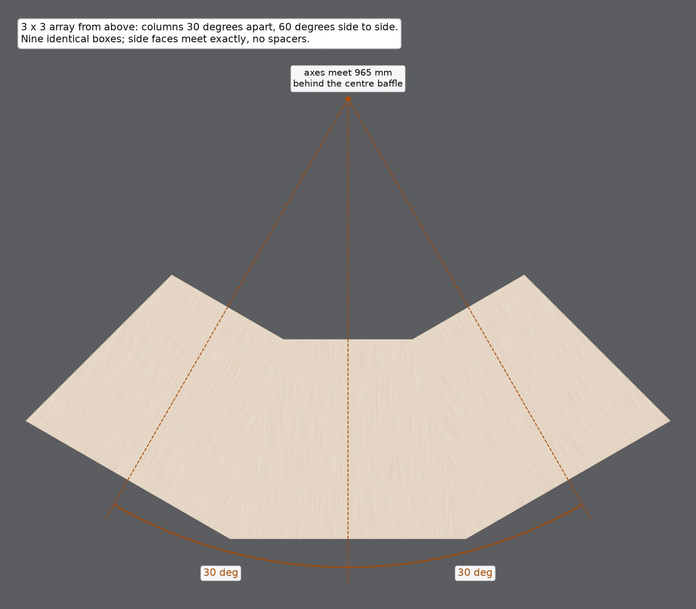

Sunflower
A three-way coaxial horn built on the idea behind the Funktion-One Res 2: a kick horn up to 250 Hz, a cone mid that carries the voice from 250 Hz to 4 kHz, and a 1 inch compression driver above. Here the three are nested on one axis. The HF horn is the mid's phase plug, the mid horn is the core of the kick horn's centre body, and its mouth sits inside the kick mouth.

Status. Simulated, not built or measured. The cone and basket shapes of the drivers are estimated from datasheet drawings, and the phase plugs must be checked against real drivers before printing. The limits section lists what the models leave out.
Nine boxes, one point source
The sides are angled at 15 degrees and the top and bottom are flat, so nine identical boxes tile exactly: three columns fanned 30 degrees apart, each a straight stack of three, every joint flush.




Drivers
| Section | Driver | Source | Price (USD) |
|---|---|---|---|
| Kick | 18 Sound 15W700, 15 inch, mounted reversed | datasheet | $233 |
| Mid | Beyma 8MI100, 8 inch | datasheet | $113 |
| HF | B&C DE111, 1 inch exit, 60 mm body | datasheet | $105 |
| Drivers per box | $451 |
Chosen by an optimiser that tried 19,194 mid and HF combinations and 3,344 kick and cabinet variants, then tuned the best through the crossover. See design.